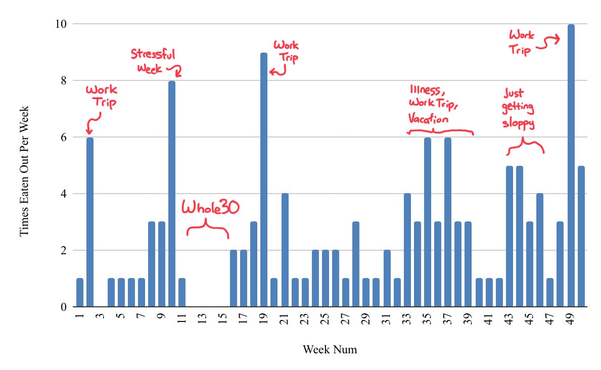
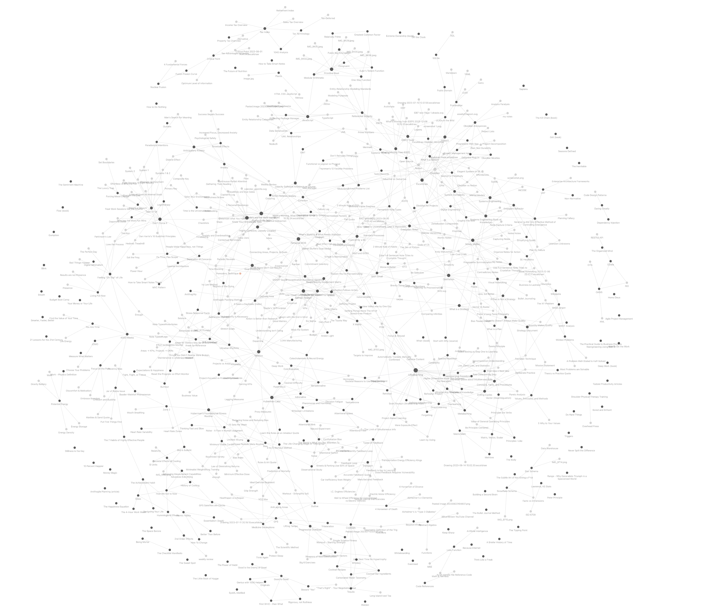
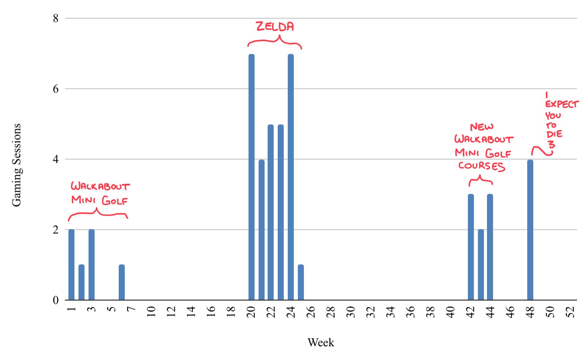
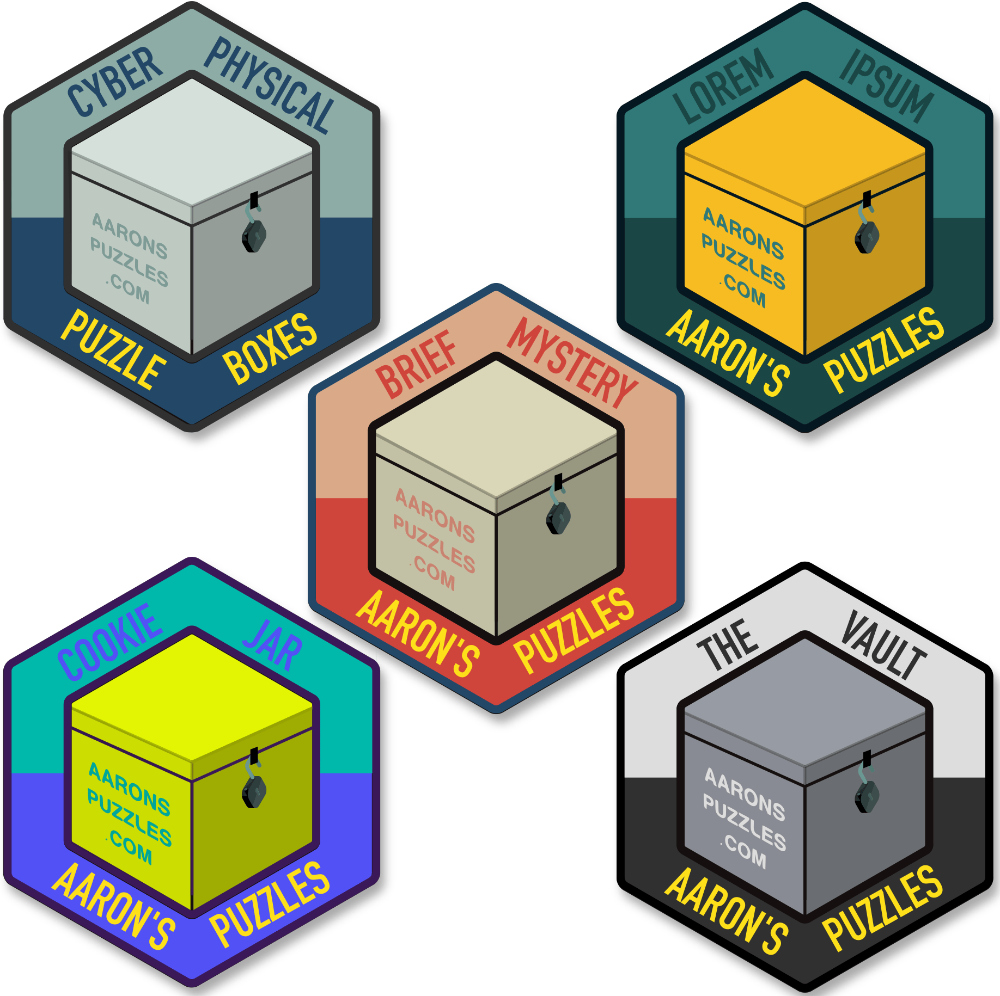

It’s time for the annual year-in-review report card and goal-setting Column. I’ve been writing this post for a month now, so I hope it doesn’t suck.
2023 Year in Data
Checking in on goals I set in Column #427, I did pretty well this year.
Health
Exercise
Success
Goal: 150 workouts
Result: 152 workouts
This was a great year in terms of health. Through great luck I managed to avoid major illnesses. Our family was healthy, for the most part, the whole year - for which I’m incredibly grateful.
This was my 2nd-most-exercised year on record. As a result, I look and feel about as good as I ever have.
I’m particularly happy with this result, because it was accomplished in spite of a pretty debilitating injury I incurred thanks to a shovel and some dirt. See if you can tell when it happened.
Another note on exercise - I’ve continued doing ~3-4 self-imposed fitness tests per year. This system I proposed in Column #379 continues to work.
Eating Out
Fair
Goal: <125 times
Result: 134 times
This was a minor failure. Ultimately I’m not too upset about it. What’s more interesting is what correlations you can draw from the data and my life.

Drinks
Success
Goal: …generally drink better
Result: fairly successful
I’m not much of a drinker, but I’m also not completely abstained to water. My tracking here is limited to those beverages that I consume that I don’t consider “healthy”. So, this doesn’t include things like water, tea, black coffee, and powdered drink mixes. Everything outside of that we’ll call a “less healthy drink”, which can be roughly divided into ~6 categories. My consumption of less healthy drinks did fall by 30% from 2022 to 2023. Interestingly, I had exactly one less healthy drink per day in 2023 (assuming I don’t drink before midnight (bad assumption).
What’s slightly more interesting to me is the mix of drink types. I’ve broadened out. More categories. More even mix from each category. Not shown here, but even within categories things have broadened out more.
Sleep
I track it. It’s been better this year than any other year on record. Crazy what happens when your kid learns to sleep through the night. Life is better and I am good at sleeping enough and at consistent times.
Content Creation
Notes
Success
Goal: 150 new notes
Result: 230 new notes
This was the year that my collection of permanent “Evergreen” notes made the move from productivity multi-tool Notion to the more fit-for-purpose application Obsidian. This transition was not without some level of sacrifice,1 but ultimately worth it. The notes are much more durable and in my control now that they are on my own computer. Also you get some benefits like this neat graphic showing the 230 new notes (and the connections between them) that I added in the past 365 days.

Columns
I wrote 21 Columns this year, including this one. This was a marked increase from years passed. I didn’t have a goal for writing Columns, but I’m pretty pleased with the year in blogging.
Other Stuff
I made heaps of doodles and little ad-hoc things I didn’t track.
Content Consumption
My media consumption dropped this year. It wasn’t just my lack of books and movies, I also didn’t really watch much TV or play many games. This was due to a few factors. My kids are of the age that I can’t watch really any of the things I’d like to watch with them around. I spent way more free nights working on projects. Due to both of those factors, my intake of YouTube (filling in the cracks between things) has increased considerably.
Books
Warning
Goal: finish 18 books
Result: finished 13 books
I read 13 books. This was less than I’d hoped for. Podcasts took over my book-listening to some extent.
The best was probably Recursion by Black Crouch. The worst was probably Nine Perfect Strangers.
Movies
Warning
Goal: finish 30 new movies
Result: finished 20 new movies
I finished 20 new movies this year, and re-watched only 5. This I expect to increase alongside the relaunch of my movie-based podcast.
The best was Across the Spiderverse. The worst was Ant-Man: Quantumania.
TV
I watched TV on 79 occasions. While that sounds like a lot, I’ll point out that’s only about 1.5 sessions per week. Also, as I’ve mentioned before, my tracking method for TV is a bit, strange. I don’t track individual episodes watched, nor time. I simply track name of show and date. So I could watch 10 episodes of Stranger Things in a day, and that shows up as 1. Meanwhile I could watch one episode each of Gen V and Invincible in an evening and that shows up as 2. Despite the poorly-controlled capturing mechanism, my TV intake is has pretty consistent over the past 5 years.
I watched 21 unique shows this year. The best of them was Jury Duty. The worst of them was Secret Invasion.
Games
Videogames I played on 47 occasions, but 30 of those occasions were Tears of the Kingdom, that’s rounded out by 4 sessions of “I Expect You to Die 3”, 6 sessions of Mario Wonder, and 7 of Walkabout Mini Golf. My gaming is incredibly “bursty” and associated with particular games.

Podcasts
Looking at those results, you might conclude I’ve been less engaged with media than usual this year. That is true, to some extent, but I think a large portion of my media-intake switched to YouTube and podcasts. I don’t actively track those, because they’re tracked for me. I doubled my (already huge) podcast listening time from 2022 to 2023.
YouTube
The real problem is YouTube. YouTube has almost certainly taken up more screen time than TV shows and movies combined.
There are a number of issues with the data surrounding my relationship with YouTube. First, Google doesn’t make “time watched” available for anything other than the past week.2 Secondly, my account is signed into YouTube on the family TV. So I reckon a lot of the increase starting in 2019 was comprised of videos watched by my children. All that said, the trendline is both clear and troubling:
Social
This Column is going on long, and I don’t need to write a ton about my social life, relationship, and family on the internet. I track some high-level aspects of these things. They all didn’t receive enough attention in 2023, and will become a higher focus in 2024.
2023 Year In Projects
This has been a productive year. The following is an incomplete list of things we did.
Vacations
We took a few! Las Vegas (x2!). The Black Hills of South Dakota. Lake of the Ozarks. These are projects, per my definition. They took work to do and resulted in a thing.
Personal Data Warehouse
I wrote about this already! See here. What I didn’t write was my personal disappointment with the amount of time I sunk into the project. It was meant to be the final ground-up rewrite of the system. That’s still the plan, thankfully. It is better now, too.
Aaron’s Puzzles
I migrated my branding from “Get in to Win” to the more personalized “Aaron’s Puzzles”.
New Logo(s)
While I haven’t fully locked in a new “overall” logo, I’ve settled on a design that I like. Each box with its own color palette. The overall logo (as of right now) is the one on the top left.

The Vault
This puzzle box was made in 2022… but I reimplemented the digital aspects of The Vault in SvelteKit. Essentially a ground-up rewrite.
The Cookie Jar
My Puzzle Box for 2023 was The Cookie Jar. Its specific contents are meant to be a secret, but it includes:
- A custom box built out of scrap wood I had around
- Several more custom components I built from wood
- Several coding projects
- Several drawings, and very lightweight animations.
- A video I made with my family, which was great fun
Home Renovation
We made our house better by:
- Installing new lights in the kitchen, living room, and back yard
- Installing some new drainage features this sucked and I claim much credit
- Replacing a fan (or 2)
- Replacing some bad carpet with good laminate
Goal Setting - Areas
In Column 441 I wrote about my Notion-based personal productivity system. One part of the system was left off for the sake of simplicity - areas. Here’s that graphic again, with the inclusion:
“Areas” is an idea I’ve lifted from Tiago Forte’s “PARA Method”. They’re those things in your life that don’t have an end date. Some facet or feature of your life that you have a responsibility to maintain. Things like health, finances, relationships, work, et cetera. I’ve chosen to represent those in Notion as a database, which is linked to my Goals and Projects databases.
One particularly useful feature of having a literal list of Areas to work with is that the goals I’ve set for this year are associated with the members of this list. Setting my goals was a commitment inventory exercise I accomplished on accident. Nice.
Anyway, the system works really nicely. I recommend it.
Top 4: Tracking Goals for 2024
4. Content Creation
- Write ~18 Columns
- Add ~200 new notes
- Maybe reintroduce the concept of tracking ad-hoc creations
3. Content Consumption
- Read 18 books
- Watch 36 new movies
- Play through 2 videogames
- Keep the pace on TV viewing (~75 tracked sessions)
- Watch less YouTube, lower that trendline
- Slow down on Podcast listening, too
2. Social
- Capture more quotes, I only tracked 18, I should be getting more like 60
- See more friends, more often
- See more family, more often
- Go on more dates
- Take the kids to a wider variety of outings
1. Health
- Keep up the good work on sleep
- Continue to both reduce and broaden my quantity of non-healthy drinks
- Workout 183 times - this is every other day, and is admittedly an ambitious number, but is in-line with my past 3 months
- Eat out 122 times - that’s once every 3 days, which a minor reduction from my usual cadence
Top 6: Project Goals for 2024
6. Vacations
More of them. For each year only comes but once. These boys are less young every day. We need to get our time in while they still think their parents are cool. I’d like to take one or two more than we did this past year.
5. Add a modestly-sized new feature to the PDW
I want to find the balance between in too deep in coding projects, and too long between drinks, now scared to touch it. Right now I’m planning on adding a couple of capabilities to the PDW.
4. Finish some more house projects
I’d like to focus a bit more on the house in 2024. The basement needs work. There’s a shower that’s still an empty void. Every time I do a thing to improve the house I think to myself “man, why did I wait so long to do this?”
3. Start Up a Podcast
Technically, this is already done! More to come - both in terms of podcast episodes and things to say about it.
2. Create another Puzzle Box
In 2022, I made The Vault.
In 2023, I made the Cookie Jar.
In 2024, I’ll make something new. I’ve already got ideas I’m excited about.
1. Migrate this website
While this website is infinitely better than its previous instances (e.g. tumblr, blogger), it’s still not as in my control as I would like. Under the hood, I’m using Jekyll, which is a Ruby-based static-site generator. I’m thinking I’ll move to Astro, which is Node-based and capable of much more than simple static site generation. My goals are pretty simple:
- Migrate all of my existing content
- Host my body of Notes
- Integrate (to some extent) with aaronspuzzles.com
Quote:
What’s up? Chicken butt! Alexa, add chicken butt to the shopping list! My 3 year old has been hearing interesting things at daycare